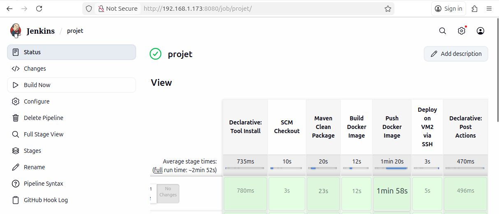

Projet DevOps – CI/CD Java avec Jenkins & Docker

Objectif
Mise en place d’un pipeline CI/CD complet pour une application Java Spring MVC packagée en WAR, automatisant :
- le build Maven
- la dockerisation
- le déploiement sur des machines virtuelles à l’aide de Docker Compose
Fonctionnalités mises en œuvre
- CI/CD : Jenkins Pipeline (checkout, build, création image Docker, déploiement Docker Compose)
- Déclenchements : Webhook GitHub + exécution périodique (cron)
- Base de données : MySQL
- Fonction clé : Insertion automatique d’employés fictifs toutes les 30 secondes
- Monitoring :
docker stats
Technologies & outils
- Java, Spring MVC, Maven
- Jenkins, Docker, Docker Compose
- Tomcat, MySQL
- Linux (Ubuntu Server), GitHub
← Retour aux projets